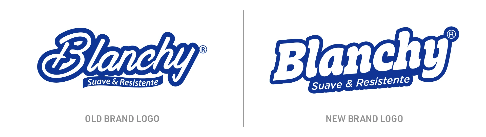

Logo Redesign
To strengthen Blanchy’s presence on store shelves, I proposed a logo redesign. The new mark is clearer and more legible, with a bolder, more impactful presence and greater versatility across packaging and brand applications.
